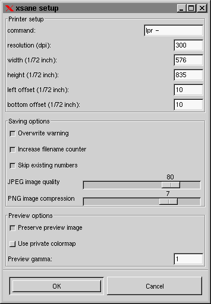

Setup
In te setup window the options for printer, saving and preview are set:

Printer options:
COMMAND:
The command should normally be the command with which
you print files. If you use the bsd printing system, this is "lpr -", if
you use the old printing system, this should be "lp -".
RESOLUTION:
With resolution you specify the resolution that shall
be used for printing. It is not always necessary to set this value to the
resolution of the printer. Especally in grayscale and color mode it normally
is good to set this value to the half or the quarter of the printer resolution
because the printer needs a greater resolution to do the dithering. This
value does not effect a change of the image size, the image size only depends
on the given zoom factor.
PRINT AREA (WIDTH, HEIGHT, LEFT OFFSET, BOTTOM OFFSET):
Each printer has it's own area size and position where it is
able to print.
Saving options:
OVERWRITE WARNING:
INCREASE FILENAME COUNTER:
SKIP EXISTING FILES:
JPEG IMAGE QUALITY:
PNG IMAGE COMPRESSION:
Preview options:
PRESERVE PREVIEW IMAGE:
USE PRIVATE COLORMAP:
PREVIEW GAMMA: